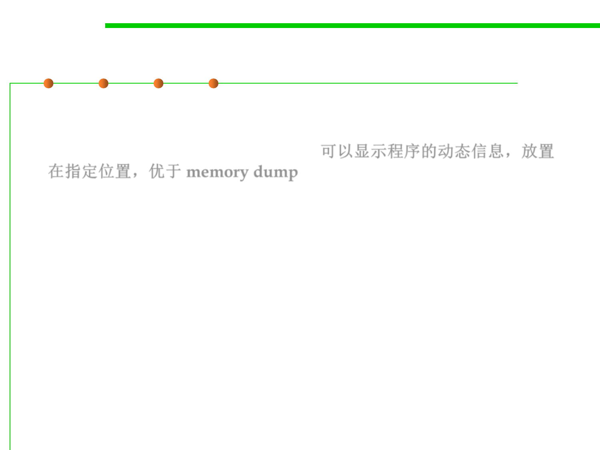

From memory dump to
printf
7.4 Debugging
▪
Scattering statements throughout a failing program to display
variable values is better than a dump as it is not static and shows
the dynamics of a program. “
printf
”
可以显示程序的动态信息，放置
在指定位置，优于
memory dump